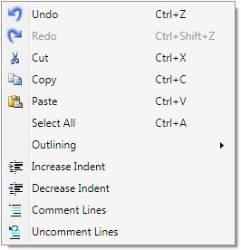
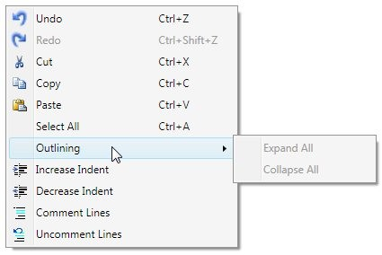

ShowDefaultContextMenu
EditControl has a built-in context menu which enables the users to easily perform common text editing operations. The default context menu can be enabled/ disabled using ShowDefaultContextMenu property. By default, this property is set to true.
Set the ShowDefaultContextMenu property of EditControl, by using the following code.
|
[XAML] <syncfusion:EditControl x:Name="editControl1" ShowDefaultContextMenu="True"/> |
|
[C#] editControl1.ShowDefaultContextMenu = true; |

Figure 14: EditControl’s Default ContextMenu

Figure 15: EditControl’s Default ContextMenu with Outlining Menu Expanded
Functionalities supported by EditControl’s ContextMenu
EditControl’s built-in context menu supports the following functionalities.
Table 8: EditControl’s built-in context menu support
|
Command |
Usage |
|
Undo |
Revert the previous action performed in the EditControl |
|
Redo |
Performs the action again that was reverted using Undo command |
|
Cut |
Cut the selected text |
|
Copy |
Copy the selected text |
|
Paste |
Paste the text in the clipboard in the current cursor location. |
|
Select All |
Selects all the text in the EditControl |
|
Outlining -> Expand All |
Expands all the collapsed blocks in the text. This functionality is supported only when the EnableOutlining is set to true and the language supports outlining. |
|
Outlining -> Collapse All |
Hides all the blocks in the EditControl’s text. This functionality is supported only when the EnableOutlining is set to true and the language supports outlining. |
|
Increase Indent |
Appends a series of empty characters (tab) in front of the first valid character in the line. This command can be performed on an individual line or selected lines. |
|
Decrease Indent |
Removes a series of empty characters (tab) if any, in front of the first valid character in the line. This command can be performed on an individual line or selected lines |
|
Comment Lines |
It detects the supported comment Lexem from the Language configuration of EditControl’s current language and appends it to individual or multiple selected lines. |
|
Uncomment Line |
Removes the comment from the individual or selected lines. |